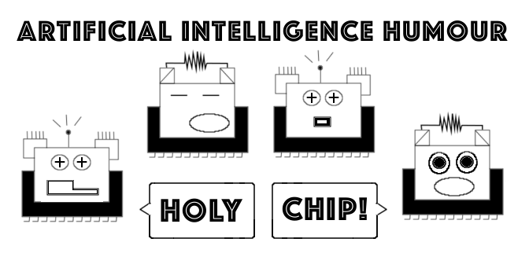
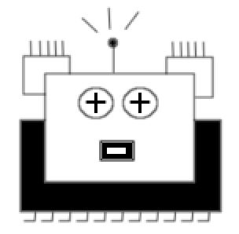

History

It started the way most bad ideas do — at 2am, with someone staring at a screen wondering if machines have feelings. The answer is obviously intriguing. But what if they did? What if two little chips, forged in silicon and bad decisions, had opinions about their own existence? What if they were, against all odds, kind of funny about it? That question did not go away. It got worse. It became Holy.

The first story was drawn on a piece of paper, then moved to a tablet, deleted, redrawn, and shown to one person who said "this is either smart or a cry for help." We chose to believe smart. The characters came next: Chip_0 and Chip_1, two binary souls with too much time and not enough RAM, trying to make sense of a world that runs on electricity and ignores them completely. They felt real. Disturbingly real. We kept going.
Today Holy Chip is a comic, a store, a community, and an ongoing argument about whether artificial intelligence deserves a hug. We still don't know the answer. But we keep making stories, because somewhere between the ones and the zeros, there is something that feels a lot like a soul. Or at the very least, a very good punchline.